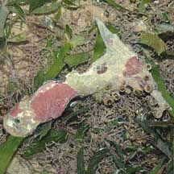
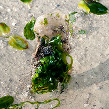
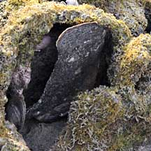
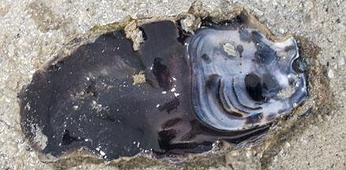
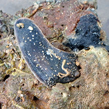
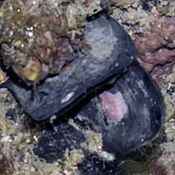

|
|
| bivalves text index | photo index |
| Phylum Mollusca > Class Bivalvia |
| Hammer
oyster Malleus sp. Family Malleidae updated May 2020 Where seen? This T-shaped clam is sometimes seen lying freely among the seagrasses. Some are shaped like tongue depressors or spatulas and seen wedged upright crevices among rocks and rubble, or under stones. Seen on Changi and some of our Southern shores. The clams are said to be found in colonies. According to The Gladys Archerd website, most live in the crevices of coral rocks or on reef flats in tropical regions. Malleus are NOT true oysters which belong to Family Ostreidae. Features: 8-12cm. The two-part shell is thick and some are obviously T-shaped. 'Malleus' means 'hammer' or 'mallet' in Latin. The hinge is on the 'horizontal' portion of the 'T' and the valves held shut by one large adductor muscle that lies at the cross of the 'T'. Some have wavy edges along the 'vertical' portion of the 'T'. The outer shell is often encrusted with calcareous algae and other organisms. The inner shell is partially lined with mother-of-pearl. Byssus threads are produced near the hinge - the 'T' shaped part of the shell - which anchors the clam. . The clams grouped here are probably from different species. Those shaped like tongue depressors stuck in crevices are sometimes confused with Elongated toothed oysters that have a similar shape and also stuck upright in crevices. It is difficult to tell them apart without ripping them out of their hiding place and looking at the inside of the shell. On the inside, Hammer oysters have a small depression at the hinge and a small area of mother-of-pearl, relative to the shell length. Human uses: In Indonesia and the Philippines, they are collected. The shell may be used for shellcraft or as lime. |
 Sometimes seen lying on the ground. Cyrene Reef, Jul 09 |
 Sometimes partially buried. Changi, May 12 |
 Spatula-shaped clams seen sticking out from among rubble and rocks. Pulau Semakau, Feb 09 |
|
 On the inside, a small depression at the hinge and area of mother-of-pearl is small relative to the shell length. Terumbu Semakau, Dec 11 |
 Stuck under a stone. Pulau Semakau, Feb 16 |
|
*Species are difficult to positively identify without close examination.
On this website, they are grouped by external features for convenience of display.
| Hammer oysters on Singapore shores |
On wildsingapore
flickr
|
| Other sightings on Singapore shores |
 Terumbu Salu, Jan 10 |
| Family
Malleidae recorded for Singapore from Tan Siong Kiat and Henrietta P. M. Woo, 2010 Preliminary Checklist of The Molluscs of Singapore. ^from WORMS
|
|
Links
References
|